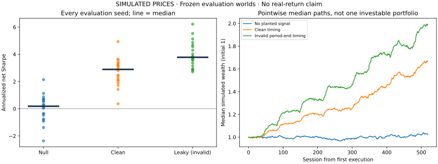

An evidence-first research system: freeze the hypothesis, test what was knowable, account for repeated trials, and keep model-written reviews behind deterministic checks and a separate approval role.
Research portfolio · Simulated prices. These are static reports generated with deterministic rules and scripted approval actors. They do not establish real investment returns or live-model quality. The hosted demo is online. Live-provider tests and operational drills are reported separately; consult the linked status for release publication and remaining human review.
Evidence on both sides of the system.
37 cases
Governance evaluation
Offline cases cover point-in-time inputs, fabricated claims, approval roles and budget behavior. Live-provider results include failed reviews; passing offline cases does not establish model reliability.
In planted worlds, the timing leak increased paired Sharpe by a median 1.23. The audit blocked all 40 leaky runs across both controls. Only 13 of 20 clean planted worlds passed the combined statistical and leakage gate.

Known simulated signal; 2022–2023 evaluation. Pointwise median paths are not one investable portfolio. Twenty worlds leave substantial uncertainty; 0/20 clean null passes has a Wilson 95% upper limit of 16.1%.
Code computes numerical claims. A model may draft bounded, evidence-cited judgments. The deterministic gate constrains the recommendation; a different authorized actor owns approval. Citation validity does not prove that all qualitative prose is correct.